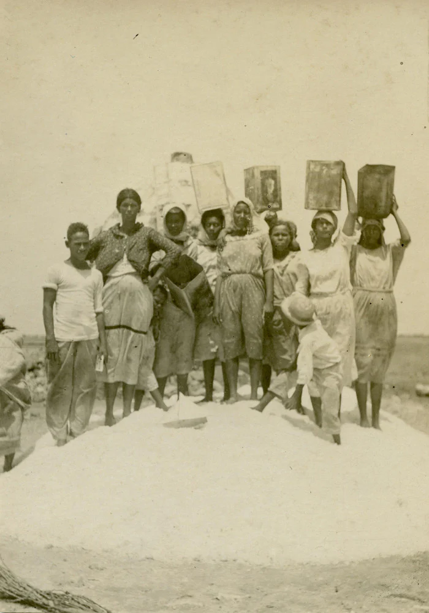
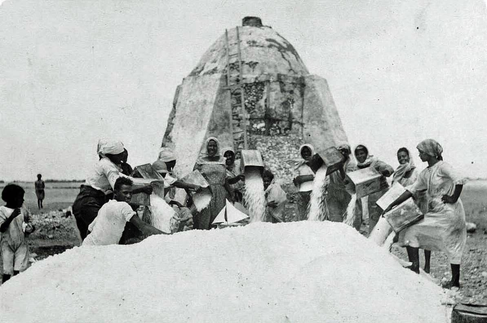

100% natural 100% Aruba.
Bring a touch of the island to your home.
We craft pure, natural sea salts with traditional methods, thoughtful production, and respect for the island which defines everything we do.
Soft and crunchy with a delicate pop.
AruSalt crystallization
About Us
AruSalt was born from a passion for farming and a simple hobby that gradually grew into something extraordinary.
Today, we proudly produce premium finishing salt at our own salt farm in Aruba, where the island's abundant sunshine, steady trade winds, and pristine seawater create the perfect conditions for natural salt production. Every batch is carefully harvested to ensure exceptional quality, purity, flavor and texture.
Our commitment is to share the authentic taste of Aruba through a product that celebrates craftsmanship, nature, and quality. Whether enjoyed at home or in a professional kitchen, AruSalt is the perfect finishing touch to elevate every meal.
The Pure Waters of Aruba
AruSalt begins at the north coast of Aruba, where the island meets the open ocean. After extensive testing by a certified laboratory in the Netherlands, this location was identified as the cleanest water on Aruba and among the cleanest seawater sources in the world.
This unique location, combined with Aruba's constant sun and trade winds, creates the perfect natural conditions for producing exceptional sea salt crystals.

Salt Crystallization Mesh

THE SALT
Our salt is unrefined, crunchy sea salt, crafted entirely by hand in small batches from the caribbean ocean. Our traditional process, utilizing open-air salt pans, is entirely natural requiring only the sea, wind, sun, and patience. We evaporate fresh, clean, filtered seawater outdoors under the sun and bathed by ocean breezes.
Unlike most other saltmakers, we do not boil or oven-dry seawater, nor trap the forming crystals in a factory building or greenhouse. We use no anti-caking agents, bleaching additives, or other chemical additions. We proudly and painstakingly craft our products to our exacting standards without cutting corners.
By carefully balancing solar evaporation and exposure to crisp, clean ocean breezes, seawater slowly forms into brilliant white salt crystals with a mild, briny flavor and a soft, distinctive, wonderfully pleasing crunch. Our salts are known for their "sweet" and clean flavor, with no aftertaste or the chemical, metallic, or medicinal notes commonly found in table salt, kosher salt, and most factory-finished or boiled salts.
Our hand-cultivated, Aruban-made salt is slightly moist and moderately coarse. It's valued for its briny sweet taste of the Caribbean Sea, for its pleasingly distinct texture (not too hard and not too soft), and for its beautiful square shape, size, and color.
A tiny pinch of salt
Our different flavors & products

AruSalt – Pure Caribbean Sea Salt
$29.00

AruSalt – Caribbean Bath Salt
$49.00
Harvested with respect for land and sea

Hand-harvested
Produced in small batches using traditional methods with care and craftsmanship.
Sun-dried
Naturally dried under the caribbean sun to preserve texture and minerals.

Pure and Natural
Free from additives, processing, or refinement and naturally contains essential trace minerals.
Aruba's Salt Heritage
Long before modern roads and resorts transformed the island, Aruba's natural salinas played an important role in everyday life. Scattered along the coastline and across the island's low-lying landscapes, these shallow salt ponds provided local communities with one of nature's most valuable resources.
Salina Ranchoe
For generations, salt was harvested across Aruba, from its rugged rocky coastline to natural salinas such as Salina Rancho (pictured above) in Oranjestad. These shallow salt ponds created the ideal conditions for seawater to evaporate naturally under the Caribbean sun, leaving behind bright white salt crystals ready to be collected by hand.
Historical records show that Aruba had seven natural salt pans by 1816, including Salina Ranchoe. Unlike the large commercial salt works on Bonaire, Aruba's salt production was relatively small and intended primarily for local use.


The locals
Using simple hand tools like coconut shells and wooden buckets local harvesters carefully gathered the salt crystals. The work was hard and demanded patience and an understanding of nature, relying entirely on the perfect balance of sunshine, steady trade winds, and time. These traditional methods were passed down through generations and became part of Aruba's cultural heritage.
Historical records show that Aruba once had several commercial salt pans that supplied salt to the local population. The salt was an essential part of island life, valued for preserving fish and meat long before refrigeration became available. Harvesting was done by local laborers assisted by donkeys to transport the heavy loads from the salinas.
Commercial decline
Commercial salt harvesting gradually disappeared during the twentieth century, the knowledge and appreciation for naturally harvested sea salt never disappeared. At AruSalt, we are proud to continue this tradition by combining centuries old salt farming techniques with modern quality standards. We still rely on the same natural elements that made salt harvesting possible for the old timers.
Every crystal of AruSalt is a tribute to Aruba's rich salt heritage, bringing an authentic piece of the island's history to tables around the world.